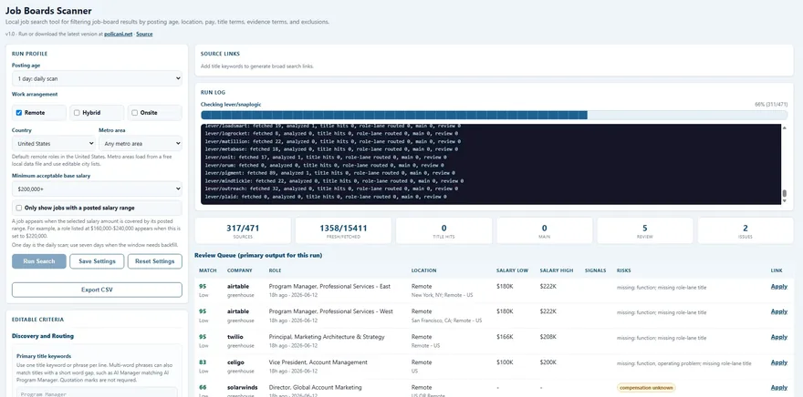
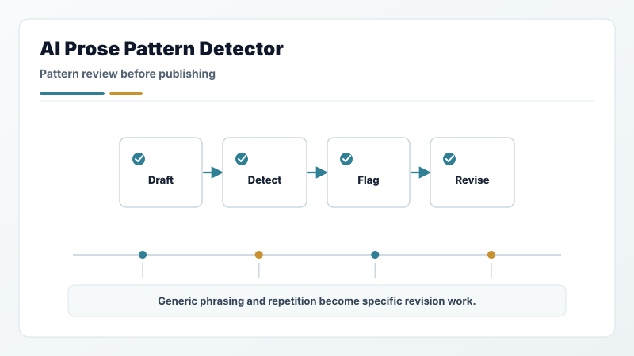
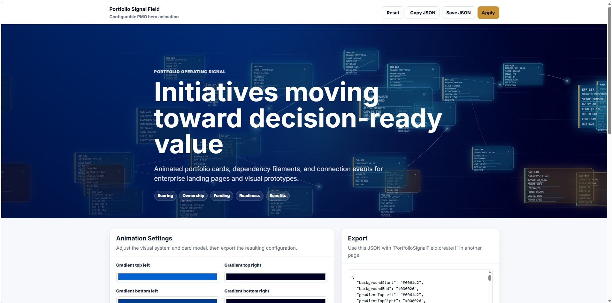

Job Boards Scanner

Collect, filter, and rank public job postings by fit, salary, location, posting signal, and source health — so your time goes to the roles worth chasing. Runs entirely in your browser.
Other public resources
Community tools and product demos for career evidence, job-search signal, professional writing, AI tools, and side projects. They sit outside the executive portfolio and should not be read as PMO proof claims.
Community lane
This page collects resources I built for people working through career evidence, job-search signal, professional writing, AI tools, and side projects. They are practical resources and product demos, not executive PMO or portfolio-governance evidence.
Use these as practical resources and demos. They may show broader workflow craft, but they should not be read as executive resources or as proof of PMO leadership fit.
Career & job search

Collect, filter, and rank public job postings by fit, salary, location, posting signal, and source health — so your time goes to the roles worth chasing. Runs entirely in your browser.

Ground every resume and cover-letter claim in real evidence, fit notes, and proof narratives, then hand off to DOCX. It doubles as an applied AI workflow-governance build — evidence-grounded generation with human review gates.
AI tools

A router-first operating model for AI subagents, for Codex and Claude. One router triages each request, routes it to the fewest expert capabilities, holds dependency order, gates quality, and returns one clean result — built to cut the token waste, rework, and role sprawl most multi-agent setups create.

A writing-review tool that flags generic, AI-shaped phrasing, repetitive business language, and revision opportunities — across portfolio copy, professional writing, summaries, drafts, resumes, and cover letters.
Side project

A configurable animated background of synthetic initiative cards that drift, connect with glowing filaments, and react to the cursor — with a no-code config tool and one-click JSON export. A weekend build, directed end to end with AI tools.
Portfolio return path
The main portfolio remains focused on PMO, portfolio governance, executive operations, AI workflow governance, evidence discipline, and delivery follow-through.
Connect
For PMO, portfolio governance, AI workflow governance, and executive operations evaluation, start with the portfolio, experience, and proof pages.